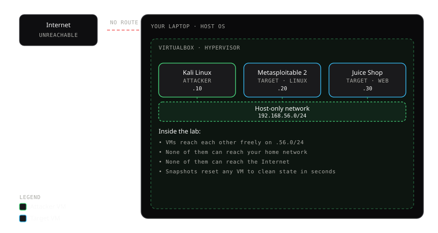
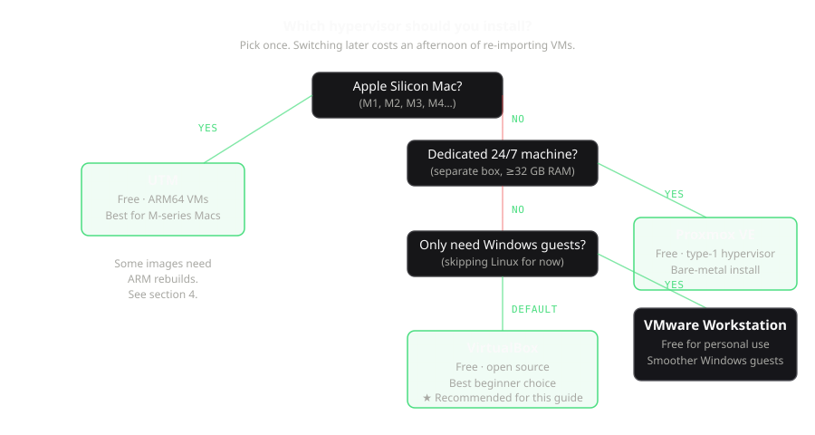

Monta un laboratorio de ciberseguridad en un solo portátil, legalmente, en 20 minutos.
No necesitas un servidor dedicado, un switch gestionable ni ESXi para empezar a practicar seguridad. 16 GB de RAM y un hipervisor gratuito cubren el 90% del camino.
La mitología en torno a los laboratorios de ciberseguridad caseros intimida: servidor dedicado, tres NIC, un switch gestionable, licencias de ESXi, un subreddit de homelab entero lleno de siglas. La verdad es que para el primer 90% del aprendizaje práctico solo necesitas un portátil con 16 GB de RAM y un SSD. Este artículo te guía de principio a fin por el laboratorio mínimo viable: qué es, qué hipervisor elegir, cómo montarlo, cómo verificar el aislamiento, qué hacer con él el primer día y cómo saber cuándo te has quedado pequeño.
Al terminar tendrás tres máquinas virtuales en una red aislada: una máquina atacante, una máquina Linux vulnerable y una aplicación web vulnerable. Sabrás cómo romperlas a propósito, restaurarlas en segundos y capturar el tráfico de red entre ellas. Y harás todo esto en hardware que ya tienes, legalmente, sin tocar sistemas de nadie más.
1. Qué significa realmente "laboratorio" (y qué no)
Un laboratorio casero es un entorno aislado donde puedes ejecutar software que no ejecutarías en tu máquina normal –VM vulnerables, herramientas de atacante, instrumentación a nivel de kernel, muestras de malware– sin poner en riesgo tu equipo del día a día ni las redes de otras personas. Dos propiedades son innegociables.
El aislamiento significa que el laboratorio no puede alcanzar tu red doméstica, tus archivos de trabajo ni internet a menos que lo enrutes explícitamente. Un laboratorio mal configurado que puede entrar por SSH a tu router no es un laboratorio, es un riesgo. Verificaremos el aislamiento en la sección 4.
El reseteo significa que puedes romper una VM a propósito y restaurarla a un estado limpio en segundos, no en horas. Las snapshots del hipervisor hacen esto trivial. Un laboratorio sin snapshots es un laboratorio en el que tendrás miedo de experimentar, lo cual anula el propósito.
Todo lo demás (más VM, más RAM, redes con varios segmentos, un switch gestionable) es una comodidad. El laboratorio mínimo de abajo entrena las mismas habilidades fundamentales que un rack de 3.000 $: la diferencia es de comodidad, no de capacidad.

Esa es toda la arquitectura, sobre el papel: un portátil ejecutando VirtualBox, tres VM comunicándose entre sí en una red privada que no lleva a ninguna otra parte. Vamos a montar exactamente esto.
2. Elige tu hipervisor en 30 segundos
El hipervisor es el software que ejecuta tus máquinas virtuales. Hay docenas. Para un laboratorio casero de iniciación, la elección está entre cuatro. Usa este árbol:

Para todo el que lea esto en un portátil normal, la respuesta es VirtualBox. Es gratis, es de código abierto, funciona en Linux/macOS/Windows, tiene soporte estable de snapshots y casi todas las imágenes de VM prefabricadas que descargarás en este artículo vienen con un perfil de VirtualBox ya integrado. El resto de esta guía asume VirtualBox; los principios se trasladan sin problema a cualquiera de los otros.
| Hipervisor | Coste | Punto fuerte | Elígelo cuando… |
|---|---|---|---|
| VirtualBox | Gratis | Universal, apto para principiantes | Quieres que simplemente funcione en cualquier portátil |
| VMware Workstation Pro | Gratis (uso personal) | Invitados Windows más fluidos | Ejecutas sobre todo VM de Windows |
| UTM | Gratis | Nativo en Apple Silicon | Estás en un Mac de la serie M |
| Proxmox VE | Gratis | Bare-metal, interfaz web, clustering | Tienes hardware dedicado |
Una nota sobre Apple Silicon
Si estás en un Mac M1/M2/M3/M4, la mayoría de imágenes de laboratorio prefabricadas "clásicas" (Metasploitable 2, appliances antiguos de Kali) son solo x86. Tienes tres opciones. La más limpia es usar UTM con versiones ARM64 de Kali y Parrot, y usar OWASP Juice Shop como objetivo vulnerable (es una app en Node, corre de forma nativa en ARM). Las otras dos son más lentas: ejecutar imágenes x86 mediante VirtualBox emulado por Rosetta (lento pero funciona), o hacerte con un mini-PC x86 barato y conectarte por SSH. Para esta guía asumimos que estás en un portátil x86 normal.
3. El montaje de 20 minutos
Una vez instalado tu hipervisor, esta es la secuencia exacta. Tiempo total, incluidas las descargas: 30-60 minutos según tu conexión. Tiempo activo con las manos en la masa: 20 minutos.
Paso 3.1 – Crea la red aislada
En VirtualBox: Archivo → Herramientas → Gestor de red → Redes host-only → Crear. Llámala breachfolio-lab. Fija el rango de IP en 192.168.56.0/24 (el valor por defecto de VirtualBox, que nos vale). Desactiva DHCP por ahora (asignaremos las IP manualmente para que el diagrama de arriba siga siendo exacto). Deberías ver la nueva red breachfolio-lab en la lista con el rango 192.168.56.0/24 una vez creada.
Esto crea un adaptador de red virtual en tu anfitrión que solo existe dentro de VirtualBox. Las VM conectadas a él pueden comunicarse entre sí y con el anfitrión en esta subred, pero no pueden alcanzar tu red física ni internet. Este es el perímetro del laboratorio.
Paso 3.2 – Descarga e importa Kali Linux
Kali Linux es una distribución basada en Debian que empaqueta todas las herramientas de seguridad ofensiva que necesitarás durante los primeros seis meses: nmap, metasploit, burp-suite, wireshark, hashcat, john, sqlmap y unas trescientas más. Instalarlas a mano en una máquina Linux limpia es una distracción de varios días; el equipo de Kali ya lo ha hecho por ti.
Ve a la página oficial de descargas de Kali, elige "Virtual Machines" y descarga el appliance prefabricado para VirtualBox (un archivo .ova, ~5 GB). En VirtualBox: Archivo → Importar servicio virtualizado → elige tu .ova → Importar. Tras la importación, antes de arrancar, edita la configuración de red de la VM: cambia el Adaptador 1 de "NAT" (el valor por defecto) a "Adaptador solo-anfitrión" y selecciona tu red breachfolio-lab.
Arráncala. Las credenciales por defecto son kali / kali. Cuando veas el escritorio, abre una terminal y fija una IP estática:
$ sudo nano /etc/network/interfaces
# añade:
auto eth0
iface eth0 inet static
address 192.168.56.10
netmask 255.255.255.0
$ sudo systemctl restart networking
$ ip a # verifica que eth0 tiene 192.168.56.10Ahora apaga la VM (sudo poweroff) y toma una snapshot llamada clean-base. A partir de ahora, cualquier cosa que rompas –un paquete instalado por error, un rm -rf accidental, un servidor X inutilizado– está a un clic derecho de deshacerse.
Paso 3.3 – Descarga e importa Metasploitable 2
Metasploitable 2 es un sistema Ubuntu 8.04 roto a propósito. Es un museo de malas prácticas de seguridad: claves SSH débiles, credenciales por defecto en media docena de servicios, una puerta trasera en FTP, una pila de aplicación web vulnerable, un Samba mal configurado, un PostgreSQL explotable. Es una gozada para aprender y un peligro en la internet abierta, que es exactamente por lo que lo mantenemos en la red host-only.
Descárgalo del archivo de Rapid7 (es un .zip que contiene un archivo de disco .vmdk, ~870 MB). En VirtualBox: Nueva → Tipo: Linux → Versión: Ubuntu (32-bit) → 1024 MB de RAM → Usar un disco duro virtual existente → apunta al .vmdk. Tras crearla, pon el Adaptador 1 en la misma red host-only breachfolio-lab.
Arráncala. El acceso es msfadmin / msfadmin. Fija una IP estática:
$ sudo nano /etc/network/interfaces
# añade:
auto eth0
iface eth0 inet static
address 192.168.56.20
netmask 255.255.255.0
$ sudo /etc/init.d/networking restart
$ ifconfig # confirma que eth0 tiene 192.168.56.20Apaga. Snapshot. Llámala clean-base. (El mismo patrón de nombres en todas las VM facilita hacer scripting más adelante.)
Paso 3.4 – Levanta OWASP Juice Shop
Juice Shop es una aplicación web deliberadamente vulnerable: una single-page app moderna en Node.js con decenas de fallos intencionados que cubren todas las categorías del OWASP Top 10. Es el mejor objetivo que encontrarás para practicar testing web. No necesitas una VM completa para ella; puedes ejecutarla en una pequeña VM con Ubuntu Server (o en un contenedor Docker, pero por coherencia aquí lo haremos en una VM).
Crea una VM diminuta con Ubuntu Server 22.04 (512 MB de RAM sobran). La misma red host-only. Dentro de ella:
# Instala Node y ejecuta Juice Shop
$ sudo apt update && sudo apt install -y nodejs npm
$ git clone https://github.com/juice-shop/juice-shop.git
$ cd juice-shop
$ npm install --omit=dev
$ npm start
# Juice Shop ya está escuchando en :3000Ponle a esta la IP estática 192.168.56.30. Desde Kali, apunta tu navegador a http://192.168.56.30:3000 y deberías ver una colorida tienda online rota. Toma una snapshot (clean-base otra vez).
4. Verifica el aislamiento (no te saltes esto)
Este es el paso más importante de todos. Un "laboratorio" que puede alcanzar internet o tu red doméstica, por definición, no es un laboratorio. Desde Kali, ejecuta estas comprobaciones:
# Debería FUNCIONAR - puedes alcanzar tus otras VM del laboratorio
$ ping -c 2 192.168.56.20 # Metasploitable
$ ping -c 2 192.168.56.30 # Juice Shop
# Debería FALLAR - no puedes alcanzar internet
$ ping -c 2 8.8.8.8
$ curl -m 5 https://example.com # debería agotar el tiempo de espera
# Debería FALLAR - no puedes alcanzar tu red doméstica
# (sustituye por la IP de TU router doméstico - normalmente 192.168.0.1 o 192.168.1.1)
$ ping -c 2 192.168.1.1Si algo del bloque de "debería fallar" funciona, para y corrige la configuración antes de seguir. La causa más habitual es dejar el Adaptador 1 en NAT, o añadir un segundo adaptador "por comodidad" que hace de puente con tu red física. Revisa la configuración de red en todas las VM y confirma que hay exactamente un adaptador y que apunta a la red host-only.
Una vez verificado, tienes un laboratorio funcionando. Todo lo que sigue es qué hacer dentro de él.
5. Qué practicar el primer día
Aquí tienes una lista de reproducción inicial de ejercicios prácticos. Ninguno requiere nuevas descargas.
Reconocimiento con Nmap
En Kali, ejecuta:
$ nmap -sV -A 192.168.56.20Esto hace un escaneo de servicios y versiones de Metasploitable. Obtendrás un muro de puertos abiertos: FTP (21), SSH (22), Telnet (23), SMTP (25), DNS (53), HTTP (80) y muchos más. Elige tres y lee las cadenas de versión. Muchos son lo bastante antiguos como para tener CVE bien conocidos. Búscalos. Ya estás pensando como un atacante, a los diez minutos.
Explotación con Metasploit
Metasploit viene preinstalado en Kali. Lánzalo con msfconsole. Prueba el exploit clásico de manual –la puerta trasera de vsftpd 2.3.4 en Metasploitable:
msf6 > use exploit/unix/ftp/vsftpd_234_backdoor
msf6 exploit(...) > set RHOSTS 192.168.56.20
msf6 exploit(...) > runSi todo está bien cableado, obtendrás una shell de root en Metasploitable. Tómate un momento para entender lo que acaba de pasar: una vulnerabilidad en el servidor FTP permitió ejecución remota de código, disparaste el exploit y ahora eres dueño de la máquina. Restaura la snapshot cuando termines. (Sí, todo el sentido es que puedas hacerlo.)
Testing web con Burp Suite
Abre Burp Suite (preinstalado en Kali). Configura tu navegador para usar 127.0.0.1:8080 como proxy. Visita Juice Shop en http://192.168.56.30:3000. Cada petición pasa por Burp; puedes verla, editarla, reenviarla. Prueba el reto "Score Board": es un marcador integrado de vulnerabilidades que puedes ir encontrando. Resolverlas es la mejor introducción práctica a la seguridad web que conseguirás sin infringir la ley.
Captura de tráfico con Wireshark
En Kali: sudo wireshark. Captura en la interfaz eth0. Desde otra terminal, ejecuta cualquiera de los escaneos de Nmap de arriba contra Metasploitable mientras la captura está en marcha. Ahora estás viendo los ataques ocurrir en tiempo real a nivel de paquete. Filtra por tcp.flags.syn == 1 and tcp.flags.ack == 0 para ver solo los paquetes SYN. Bienvenido al fondo de la pila.
Detección: lee tus propios ataques
Esta es la parte que la mayoría de laboratorios de iniciación se saltan y la que más necesitan los defensores. En Metasploitable, antes de atacarla, abre una shell y sigue el log de autenticación: sudo tail -f /var/log/auth.log. Ahora lanza un ataque de fuerza bruta con hydra desde Kali contra SSH: hydra -l msfadmin -P /usr/share/wordlists/rockyou.txt 192.168.56.20 ssh. Observa cómo las líneas se derraman en el log. Eso es exactamente lo que ve un analista de blue team en una red real. Saber cómo se ve un ataque desde el asiento del defensor es la mitad del trabajo.
6. Un flujo de trabajo que evita dolores
Tres hábitos que te ahorrarán horas durante los primeros meses.
Toma una snapshot antes de cada experimento. Incluso los que crees que van a funcionar. Sobre todo los que crees que van a funcionar. Las snapshots son gratis e instantáneas. Restaurar desde una es un solo clic. Perder dos horas porque rompiste una configuración es evitable.
Lleva notas por VM. Un simple archivo de texto por VM que liste la IP, las credenciales, las snapshots que has tomado y los cambios que has hecho desde la última snapshot. Cuando vuelvas la semana que viene, te lo agradecerás.
Apaga lo que no estés usando. Tres VM en reposo ocupan 1,5-2 GB de RAM y un 10-15% de un núcleo de CPU para nada. Suspende o apaga las que no estén en juego.
7. Resolución de los cinco problemas que siempre fallan primero
"Kali arranca con la pantalla en negro / la imagen con artefactos."
Es el controlador gráfico de VirtualBox. Apaga la VM, ve a Configuración → Pantalla → Controlador gráfico, cambia de "VMSVGA" a "VBoxSVGA" (o al revés) y sube la memoria de vídeo a 64 MB. Reinicia. Resuelve el 95% de los problemas de pantalla.
"Mi VM no tiene red en absoluto."
Tres cosas que revisar, en orden: (1) que el adaptador esté realmente conectado –Configuración → Red → Adaptador 1 → Habilitar adaptador de red; (2) que el tipo de conexión sea "Adaptador solo-anfitrión" y que esté seleccionada la red correcta; (3) dentro del invitado, que la interfaz esté levantada (ip link set eth0 up). Si las tres se ven bien, reinicia la VM con el adaptador de red recién apagado y encendido.
"La VM va extremadamente lenta."
Casi siempre es una de estas: (a) las extensiones de virtualización están desactivadas en la BIOS de tu portátil (VT-x en Intel, AMD-V en AMD – entra en la BIOS, actívalas, guarda y reinicia); (b) el anfitrión se está quedando sin RAM porque intentas ejecutar demasiadas VM a la vez (el Monitor de Actividad / Administrador de tareas te lo dirá); (c) la imagen de disco está en un disco externo lento – muévela a tu SSD interno.
"VirtualBox se cierra al importar."
El .ova probablemente esté corrupto – vuelve a descargarlo y verifica el hash SHA-256 contra la página del editor. La segunda causa más habitual es quedarse sin espacio en disco a mitad de la importación; VirtualBox necesita temporalmente unas 2 veces el tamaño del .ova.
"Puedo hacer ping a Metasploitable desde Kali pero no llego a su servidor web en el navegador."
La pila web de Metasploitable escucha en los puertos por defecto, pero el navegador dentro de Kali no sabe de tu laboratorio. Asegúrate de escribir la URL completa con el puerto: http://192.168.56.20 para HTTP, http://192.168.56.30:3000 para Juice Shop. Y confirma que el servicio se está ejecutando de verdad en el objetivo (sudo service apache2 status en Metasploitable, npm start en Juice Shop).
8. La línea legal, en un párrafo
Todo lo descrito en este artículo ocurre en máquinas de tu propiedad, en una red que no está conectada a nada más. Eso es legal en todas partes. En el momento en que escaneas, sondeas o intentas acceder a un sistema que no es tuyo y para el que no tienes permiso por escrito, estás infringiendo la ley. La Computer Misuse Act (Reino Unido), la Computer Fraud and Abuse Act (EE. UU.), los artículos 197 bis y siguientes del Código Penal español, los §202a-c del StGB alemán y sus equivalentes en otros lugares criminalizan todos el acceso no autorizado. No hay una exención de "pero era educativo". No hay una exención de "solo estaba mirando". Quédate dentro del laboratorio. Si algún día quieres probar contra algo más grande, usa entornos de práctica legales: Hack The Box, TryHackMe, PortSwigger Web Security Academy, los sitios de retos autorizados de OWASP. Existen precisamente para que no tengas que asumir el riesgo.
9. Cuándo dar el salto
El laboratorio de portátil te lleva muy lejos. Sabrás que es hora de quedarte pequeño cuando una de estas cosas empiece a limitarte con regularidad:
- Necesitas de forma constante cinco o más VM ejecutándose a la vez (laboratorios de Active Directory, redes multinivel, arquitecturas segmentadas).
- Quieres practicar escenarios que requieren segmentación de red real –varias VLAN, un firewall en medio, una DMZ. Esto puede simularse con redes internas en VirtualBox, pero se vuelve engorroso más allá de dos segmentos.
- Quieres el laboratorio funcionando 24/7 para experimentos de ingeniería de detección de larga duración –por ejemplo, observar cómo se ve un SIEM bajo una semana de tráfico de atacante simulado.
- Estás estudiando para una certificación práctica (OSCP, CRTO, CRTP) cuyo entorno de examen tiene decenas de máquinas y quieres practicar a esa escala.
El salto más barato es un mini-PC de segunda mano (Intel NUC, HP EliteDesk Mini, Lenovo ThinkCentre Tiny) con 32 GB de RAM y un NVMe de 1 TB. 200-400 € de segunda mano. Instálale Proxmox, déjalo bajo el escritorio, gestiónalo por la interfaz web. Notarás la diferencia de inmediato, pero hasta que de verdad te sientas limitado, el portátil gana en el eje más importante: puedes usarlo a cualquier hora, en cualquier sitio, sin fricción de montaje. Las horas de práctica ganan al hardware siempre.
10. Qué leer a continuación
Una vez montado tu laboratorio, las progresiones naturales son: más práctica de ataque (PortSwigger Academy, TryHackMe), más práctica de defensa (despliega Wazuh, Security Onion o Suricata en una cuarta VM y observa cómo tus propios ataques la iluminan), o más profundidad de red (añade una VM de pfSense entre subredes y aprende reglas de firewall por inspección). Cada una de esas es su propia inmersión profunda, y cada una empieza con el laboratorio que acabas de montar.
Preguntas frecuentes
¿Es legal ejecutar Kali Linux y Metasploit en mi propio portátil?
¿Cuánta RAM necesito realmente para este laboratorio?
¿Debería usar VirtualBox o VMware Workstation Player?
¿Y si tengo un Mac con Apple Silicon (M1, M2, M3, M4)?
¿Puede mi laboratorio comprometer de verdad mi red doméstica si lo configuro mal?
Daniel A. y Óscar S. llevan Breachfolio, un sitio pequeño e independiente sobre seguridad e IA. Este artículo se redactó con asistencia de IA y una persona lo revisó antes de publicarlo. Escribimos a partir de documentación, fuentes de los fabricantes e investigación publicada, no de pruebas de laboratorio propias, y enlazamos la fuente en la propia frase que se apoya en ella. Cómo trabajamos · Quiénes somos